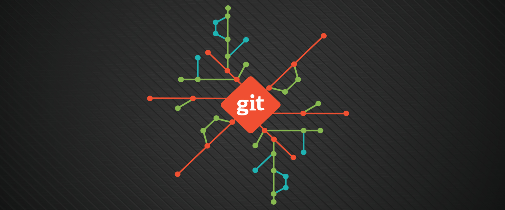
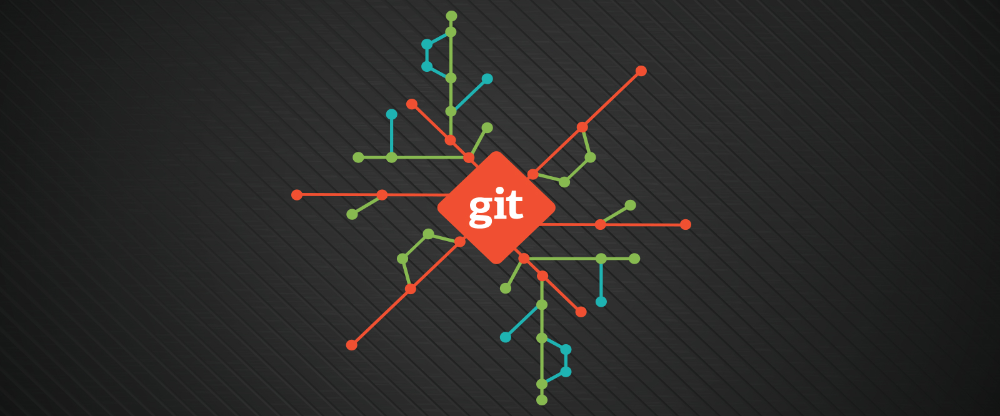

Aprendizado
A caminha começou repleta de novidades boas e empolgantes. De segunda a sexta, nos desafiamos em busca de novos conhecimentos que nos permitirão alcançar grandes conquistas e progresso pessoal Os exercícios são fundamentais, unidos ao comprometimento e o dilêma do estudo remoto que, convenhamos, necessita de muita responsabilidade e organização. Os primeiros dias foram bastante desafiadores. Diversas ferramentas novas, novo ambiente de estudo e trabalho. Agora, sigo firme em busca da minha formação e sucesso profissional.